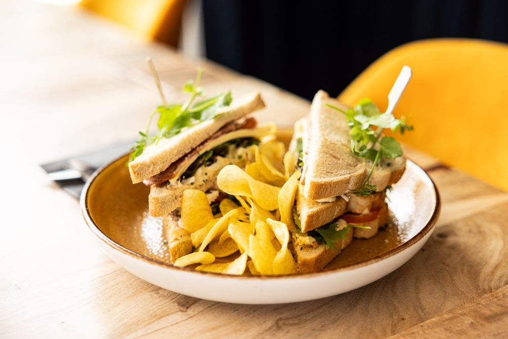
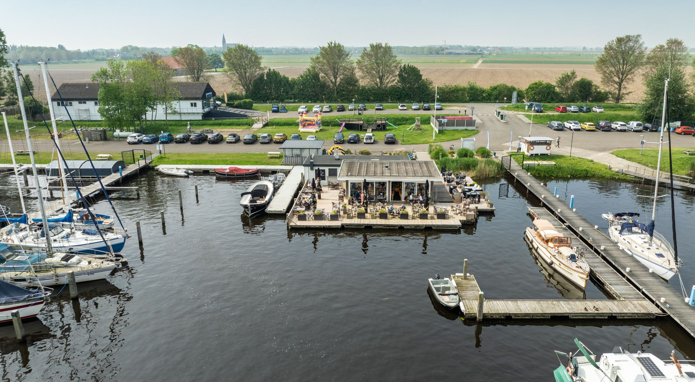
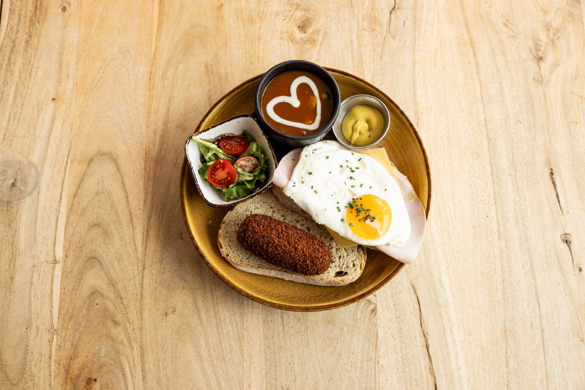
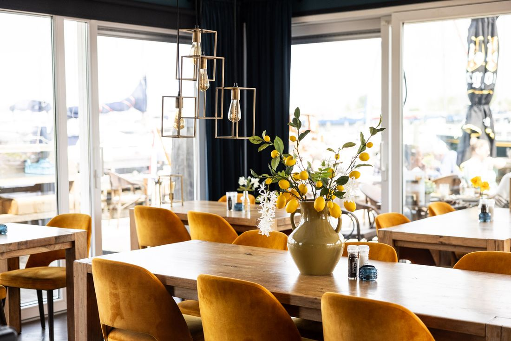
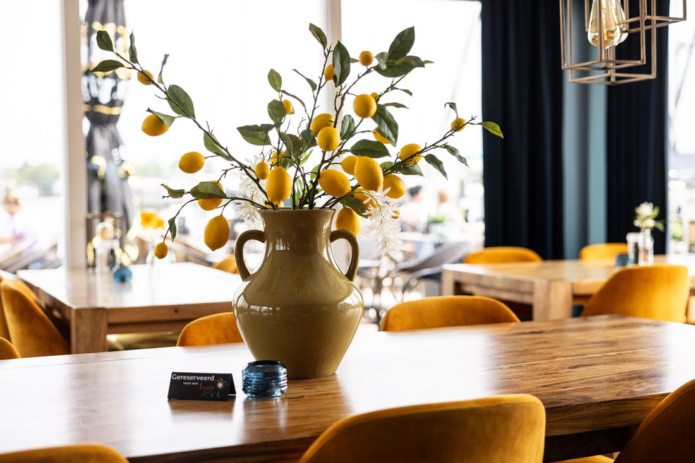
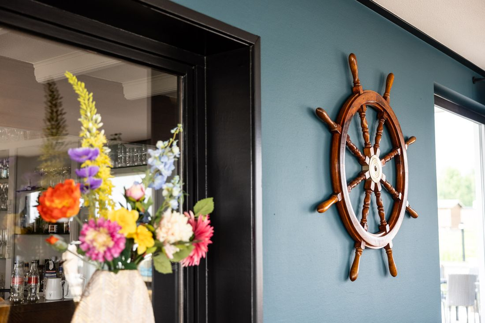
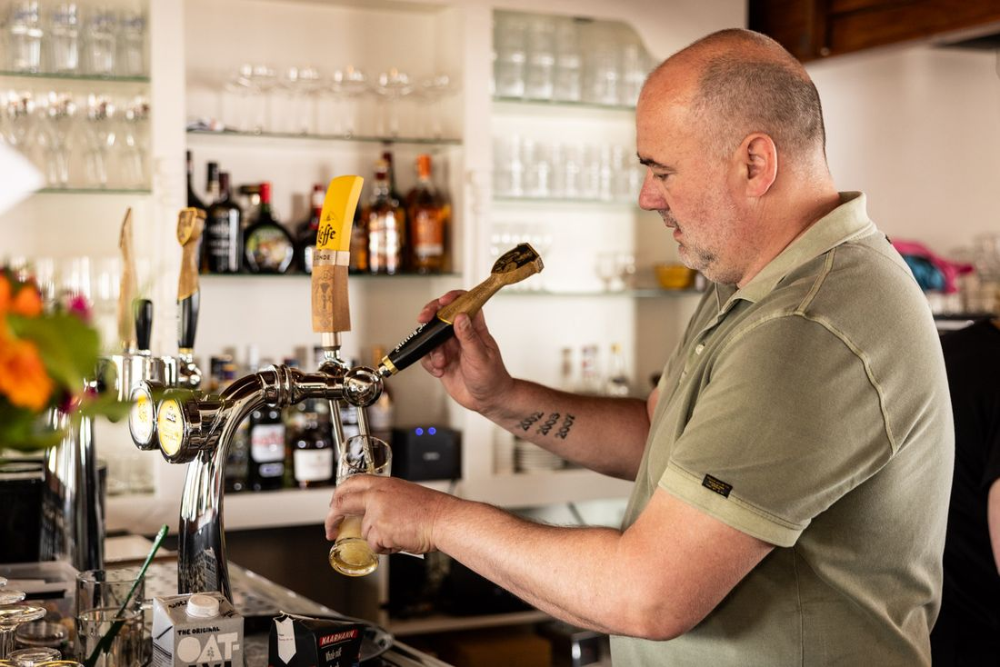
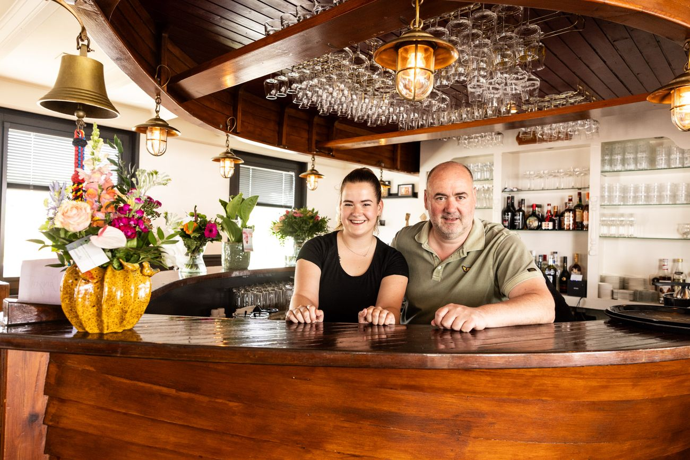

Open Clubsandwich klassiek
Luxe desembrood met mesclun, eiersalade, crispy chicken, gebakken spek en Parmezaanse kaas.
€ 15,50

Drijvend restaurant in de jachthaven van Dinteloord. Kom lunchen, borrelen of dineren aan de Waterkant, het hele jaar door, van dinsdag tot en met zondag vanaf 12.00 uur.
Lunch op luxe desembrood, of 's avonds iets van de chef. Een verrassend toegankelijke kaart, voor ieder wat wils.

Luxe desembrood met mesclun, eiersalade, crispy chicken, gebakken spek en Parmezaanse kaas.

Luxe desembrood met vlees, vis of vegetarisch, met soep en een spiegelei.
Voor wie blijft voor het diner.

't Roer om ligt midden in jachthaven Waterkant. Op ons drijvend terras zit je tussen de boten en ervaar je de jachthaven op zijn best.
Liever binnen? Ook dan kijk je uit over het water. Het hele jaar door ben je welkom, voor een lunch, een borrelplank of een diner.




Vader en dochter aan het roer
Na 32 jaar in diverse restaurantkeukens begon kok Arjan Mens samen met zijn dochter Myrthe aan een geweldig avontuur: een eigen brasserie in de jachthaven van Dinteloord.
Samen combineren ze hun passie voor eten en drinken in een verrassend toegankelijke kaart. Kom en geniet van onze liefde voor koken, de streek en familie.
Wil je zeker zijn van een plekje? Laat het ons even weten, of bel ons.
Aan jachthaven Waterkant in Dinteloord.